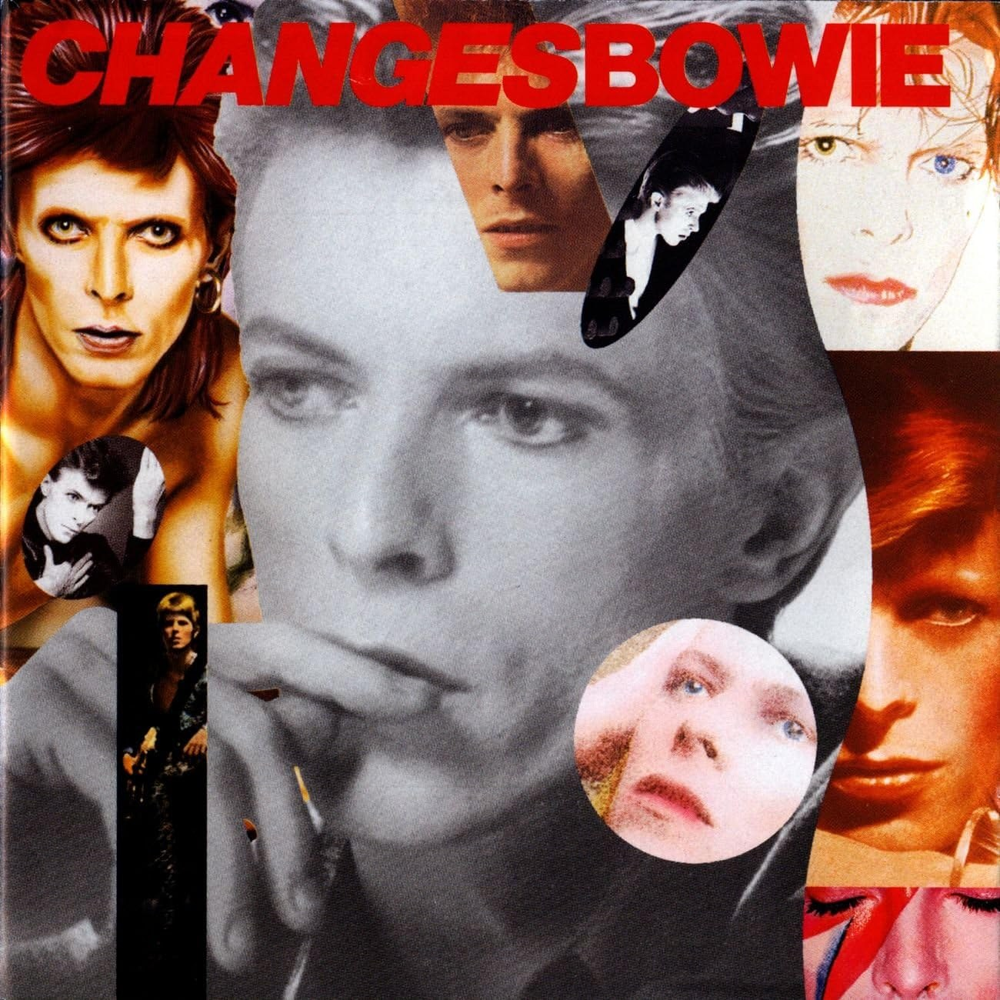

We've spoken about the advantages and disadvantages of both User Personas and Customer Journey maps. And while these tools are useful (and have been used by designers for years) they're based around one big assumption: People make choices based on their personalities. That's the reason we seek to build personas, understand their backgrounds and demographics, how these affect their decision making, and then build products and services around that. But what if people's backgrounds really weren't that important to their decision making? And more importantly, what if the decisions people make change based on time and context?

There's a big cognitive bias known as Fundamental Attribution Error. We tend to overestimate the importance of personality (and underestimate the importance of context) when explaining behaviour. Well, you might counter, No True Scotsman changes his decisions based on context. So let's look at the science. In 1973, two Princeton University psychologists, John Darley and Daniel Batson published a landmark paper on the topic, From Jerusalem to Jericho. In an experiment, they asked 40 trainee Catholic Priests to complete questionnaires regarding their motivation for entering the Church. A survey should be a great way to separate the "good ones" from the "selfish ones" right? And you're hoping that priest trainees are mostly good? Once the survey was completed though, they asked the would-be-priests to record a 5 minute talk on a given topic. But they had to travel to another building to record this. A third were told they were late and needed to hurry, a third were told they had just enough time, and the final third that they had ample time, and might even have to wait for a bit. Along the way though was an actor, slumped over, groaning and coughing in a doorway. The team was really checking how many stopped to check on the man.
Overall 40% stopped. The primary determinant was how time-crunched the priests-in-training were. Only 10% of the "hurry" group stopped, compared to 45% of the intermediate group and 63% of those who had ample time. The personality differences? They had minimal impact on their decisions. The same study has been replicated many times in many ways, and the results are always the same: context has a far greater role to play in decision making than we assume or design for.
You probably experience this in your everyday life. There are times when you might be just browsing for clothes, aimlessly wandering through the racks. There might be times when you're "shopping the sales" or when you suddenly find out you need a specific screwdriver to fix something and the store is closing in 5 minutes (or does that just happen to me?). How you move through the store, and how you decide whether to buy something would be completely different in those scenarios, even though you're essentially the same person.
So how do we account for this in our design process? One tool is to use "Mental Models" instead of just personas. These look at the context of "why" someone is doing something, not just the "who" of personas and the "what" of customer journeys. It's a bit like slicing a cake sideways, where a persona might be a traditional vertical slice. You're trying to look for similarities rather than differences.
To make a mental model, we look at the contexts and the way people do things, and then group them into categories based on similarities. A group of students may all fall into a category of "procrastinators" while another may fit the category of "meticulous planner". The same goes for a number of different kinds of processes and decisions. We start by looking at the tasks people do, and what are the major categories in the way they do these tasks. When someone enters a store, do they first look around, or do they first look at a store map? Can we figure out if there's a group that always looks at a store map, and a group that always looks around?
Mental models require work and data. Far more than a persona, because in a persona we're trying to create a composite, but here, we're just looking at choices and creating groups. But as any designer knows, playing with Post-Its can be a ton of fun. And they can be incredibly insightful as well. Understanding the different modes in which we're operating means that we, as designers, can understand who is being under-served and why. How can we tweak the design so it caters to all the different modes? Or do we want different stores/formats/offerings for different modes?
As with most things in design, looking for commonalities is key, and context is everything. Being able to understand that is the difference between a frustrating experience and a memorable one.
The first chapter of The Choice Factory by Richard Shotton breaks down the Fundamental Attribution Error really well. The rest of the book is a great read too.
Indi Young's book on Mental Models goes into much greater depth than I can in a Medium Article. She posts interesting things on LinkedIn as well.